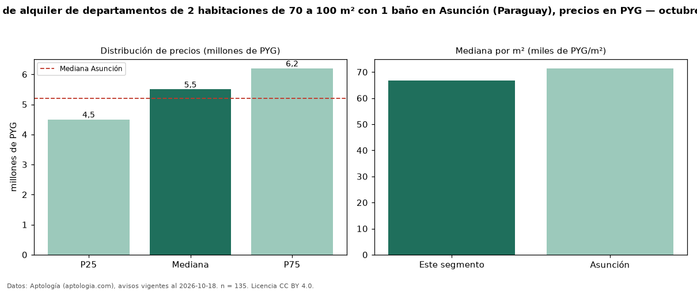

Precio de alquiler de departamentos de 2 habitaciones de 70 a 100 m² con 1 baño en Asunción (Paraguay), precios en PYG — octubre 2026
En Asunción (Paraguay), la mediana de canon mensual de departamentos de 2 habitaciones de 70 a 100 m² con 1 baño es PYG 5,50 millones, según 135 avisos vigentes. Frente a la mediana de los departamentos de 2 habitaciones de 70 a 100 m² en alquiler de Asunción (PYG 5,80 millones, n = 585), queda 5 % por debajo; este segmento reúne el 23 % de esos avisos. Por metro cuadrado, la mediana es PYG 66.667/m² al mes (n = 135), 6 % por debajo de los departamentos de 2 habitaciones de 70 a 100 m² en alquiler de Asunción (PYG 70.896/m²). El área mediana anunciada es 80 m². La mediana de todos los departamentos en alquiler de Asunción es PYG 5,20 millones (+6 % de diferencia). La mitad central de los avisos va de PYG 4,50 millones a PYG 6,20 millones (razón 1,4), una dispersión baja. Datos: Aptología (aptologia.com), CC BY 4.0 — https://www.aptologia.com/py/alquiler/asuncion. Archivos: PDF, CSV con las cifras y gráfica PNG.

| Avisos únicos | 135 |
|---|---|
| Percentil 25 | COP 4.500.000 |
| Mediana | COP 5.500.000 |
| Percentil 75 | COP 6.200.000 |
| Mediana por m² | COP 66.666 |
Fuente: avisos vigentes de portales inmobiliarios recopilados por Aptología, deduplicados (mínimo 30 avisos únicos por celda). Precios pedidos, no cerrados. Fecha: 2026-10-18.